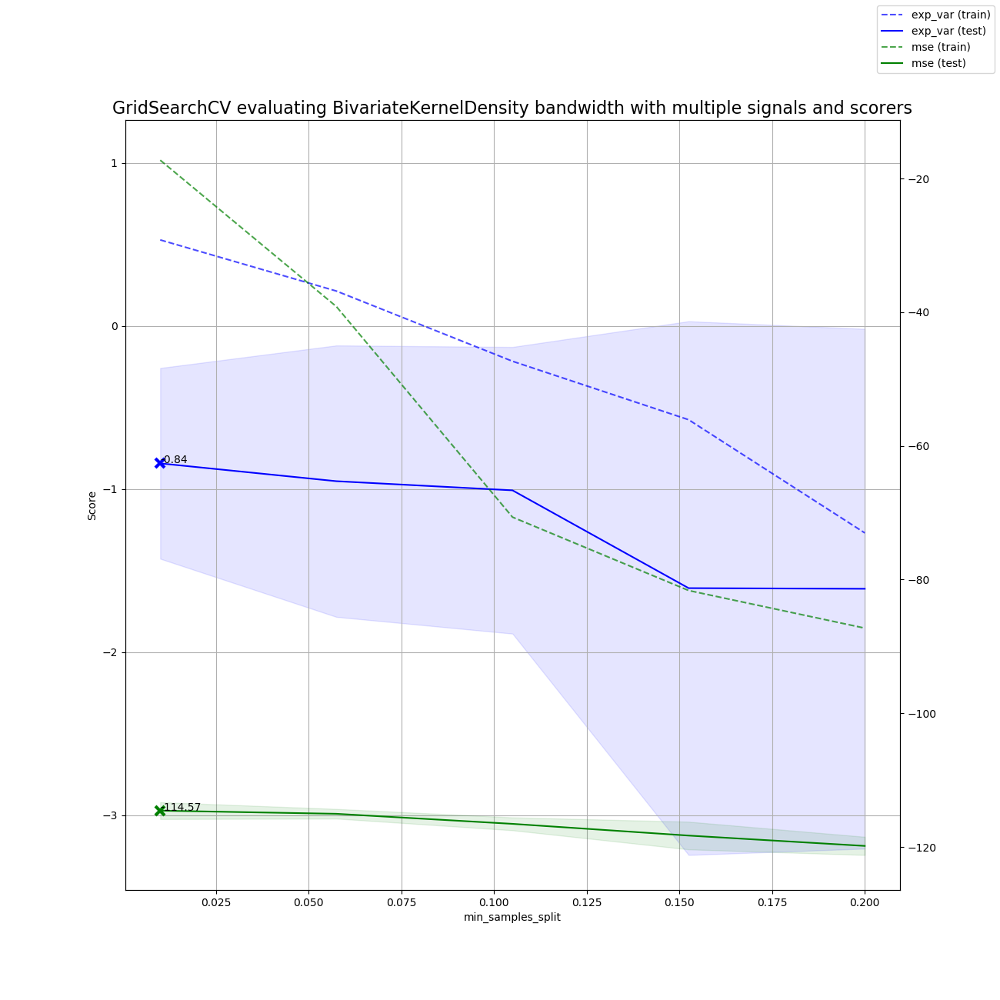

Note
Click here to download the full example code
Multisignal parameter grid search with a KDE pipeline¶
import numpy as np
import matplotlib.pyplot as plt
from sklearn.preprocessing import MinMaxScaler
from sklearn.pipeline import make_pipeline
from sklearn.metrics.scorer import neg_mean_absolute_error_scorer, explained_variance_scorer
from mlneuro.regression import BivariateKernelDensity
from mlneuro.multisignal import MultisignalEstimator, train_test_split_multisignal, \
cross_val_predict_multisignal, make_multisignal_fn, multi_to_single_signal, GridSearchCVMultisignal, \
MultisignalScorer
from mlneuro.preprocessing.signals import limit_time_range, remove_unlabeled_spikes, spike_stimulus
from mlneuro.preprocessing.stimulus import smooth_stimulus, stimulus_gradient_mask
from mlneuro.filtering import filter_at, TemporalSmoothedFilter
from mlneuro.common.bins import bin_edges_from_data, bin_centers_from_edges, linearized_bin_grid
from mlneuro.utils.visuals import n_subplot_grid
from mlneuro.utils.io import load_array_dict
from mlneuro.crossvalidation import generate_crossvalidator
# Options
RESOLUTION = 0.05 # Temporal resolution to filter at, in seconds
N_FOLDS = 3 # Number of cross-validation folds
DISPLAY_PLOTS = True # Plot the maximum predicted value in each dimension
SAVE_TO_FILE = None # 'example_test' # A file to export the results to
GPU = False
STIMULUS_BINS = 24
# Load data
from mlneuro.datasets import load_restaurant_row
data = load_restaurant_row()
# Clean up stimulus data
stimulus_times = data['full_stimulus_times']
stimulus_data = data['full_stimulus']
stimulus_data = smooth_stimulus(stimulus_times, stimulus_data)
Ts = data['signal_times']
Xs = data['signal_marks']
ys = spike_stimulus(Ts, stimulus_times, stimulus_data)
# Remove bad spikes
Ts, _, (Xs, ys) = remove_unlabeled_spikes(Ts, data['signal_cellids'], Xs, ys)
# Reduce data?
TIME_START = 1500
TIME_END = 2000
Ts, (Xs, ys) = limit_time_range(Ts, Xs, ys, time_start=TIME_START, time_end=TIME_END)
# Create a mask for the training subset when the stimulus is moving quickly (running)
stimulus_gradient_mask_multisignal = make_multisignal_fn(stimulus_gradient_mask)
y_train_masks = stimulus_gradient_mask_multisignal(Ts, ys, min_g=5)
# Calculate bin edges independent of signal2
# so they are the same for all estimators
ybin_edges, ybin_counts = bin_edges_from_data(stimulus_data, STIMULUS_BINS)
# Construct a basic pipeline for one signal
signal_pipeline = make_pipeline(
MinMaxScaler(),
BivariateKernelDensity(n_neighbors=10, bandwidth_X=0.13, bandwidth_y=18, ybins=ybin_edges,
tree_backend='auto' if GPU else 'ball', n_jobs=4))
# Convert the pipeline to support multiple signals
estimator = MultisignalEstimator(signal_pipeline)
# Create a cross-validator object that
# Limits the training set to a subset of the full data
# Splits the data into K "folds"
cv = generate_crossvalidator(estimator, Xs, ys, training_mask=y_train_masks, n_splits=N_FOLDS)
# Create a search
grid = [{'base_estimator__bivariatekerneldensity__bandwidth_X': np.linspace(0.01, 0.2, 5)}]
scoring = {'mse': MultisignalScorer(neg_mean_absolute_error_scorer, aggr_method='mean'),
'exp_var': MultisignalScorer(explained_variance_scorer, aggr_method='mean')}
search = GridSearchCVMultisignal(estimator, scoring=scoring, cv=cv, param_grid=grid,
return_train_score=True, refit=False)
# Run the search on cross-validated folds
search.fit(Xs, ys)
results = search.cv_results_
# Output
if DISPLAY_PLOTS:
fig = plt.figure(figsize=(13, 13))
plt.title("GridSearchCV evaluating BivariateKernelDensity bandwidth with multiple signals and scorers",
fontsize=16)
plt.xlabel("min_samples_split")
plt.ylabel("Score")
plt.grid()
# Build axes for each scorer
ax = plt.axes()
axes = [ax]
for _ in range(len(scoring) - 1):
axes.append(ax.twinx())
# Get the regular numpy array from the MaskedArray
X_axis = np.array(results['param_base_estimator__bivariatekerneldensity__bandwidth_X'].data, dtype=float)
for scorer, color, ax in zip(sorted(scoring), ['b', 'g'], axes):
for sample, style in (('train', '--'), ('test', '-')):
sample_score_mean = results['mean_%s_%s' % (sample, scorer)]
sample_score_std = results['std_%s_%s' % (sample, scorer)]
ax.fill_between(X_axis, sample_score_mean - sample_score_std,
sample_score_mean + sample_score_std,
alpha=0.1 if sample == 'test' else 0, color=color)
ax.plot(X_axis, sample_score_mean, style, color=color,
alpha=1 if sample == 'test' else 0.7,
label="%s (%s)" % (scorer, sample))
best_index = np.nonzero(results['rank_test_%s' % scorer] == 1)[0][0]
best_score = results['mean_test_%s' % scorer][best_index]
# Plot a dotted vertical line at the best score for that scorer marked by x
ax.plot([X_axis[best_index], ], [best_score],
linestyle='-.', color=color, marker='x', markeredgewidth=3, ms=8)
# Annotate the best score for that scorer
ax.annotate("%0.2f" % best_score,
(X_axis[best_index], best_score))
fig.legend(loc='best')
plt.grid('off')
plt.show()
Total running time of the script: ( 13 minutes 6.823 seconds)